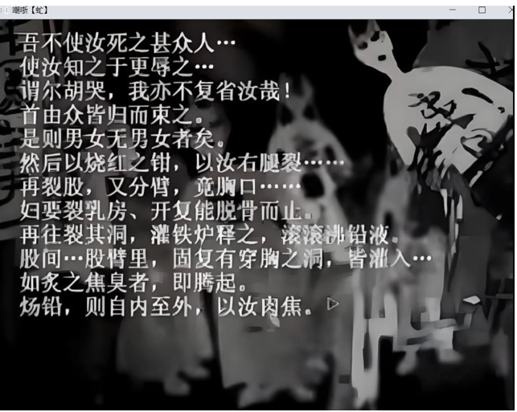

感谢你来到我们嘲哳项目组的网页 ❤️， 我们是一支自发/为爱发电性质的团队，团队成员也都是喜欢失落媒体/都市传说/怪谈故事的小伙伴们，大家使出来浑身解数，渴望创造出真正的嘲哳。
承蒙大家的厚爱！失落媒体·嘲哳已经在各大媒体有一些反响了……
我们的项目起始为一名代号为岑澜的人，但她显然不是游戏的作者，而是嘲哳这个失落媒体的追寻者。继GFAP，鬼脸谱等小有名气的失落媒体起起伏伏，追寻者们只能漫无目的的寻找，甚至说是质疑到底有没有这玩意，是不是谣言？
在此背景下，我们逐渐有了不一样的态度，与其说坐以待毙，不如主动出击，由我们自己来创造一个真正的失落媒体！

一开始爆出来的巨魔图
由美工"万俟循"老师绘制的版本
后面我还在写····